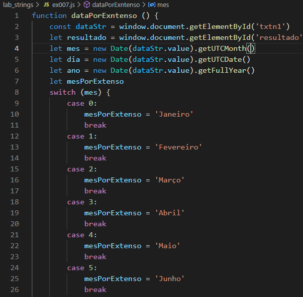

Laboratório JavaScript
João Luiz Rezende Silva
7. Faça um programa que leia uma data de nascimento em formato de dd/mm/aaaa e escreva por extenso a data. Por exemplo: 03/05/2017 vira "03 de maio de 2017".
Código:

Resultado
Clique aqui para retornar para a lista